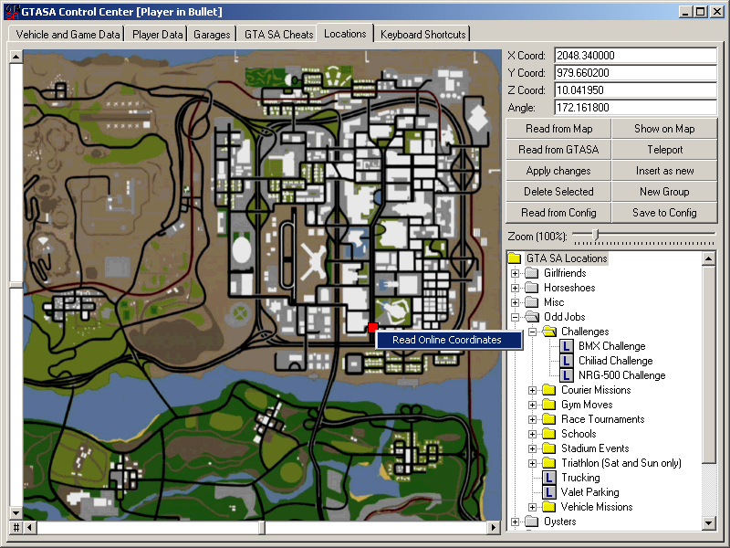
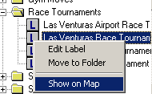
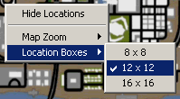
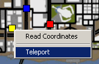

The GTA SA Map has a size of 6000 x 6000 Game Points. The scaling factor of how many game points makes a mile is actually unimportant.
On the Locations tab, you have a full size GTA SA Map with zoom possibility from 50% to 400% of the game map size. Using the sliders on the left and bottom sides of the map, you can scroll within the map.
The '#' button on bottom-left corner centers the map on visible area. As you alt+tab out of GTA SA, the control center automatically reads the player's in-game location and represent this as a red box on the map. If you click on 'read from GTASA' button, the player's in-game location gets read into X/Y/Z coordinate text-boxes and the Angle textbox, with up to 6 decimal positions.
You can also set a location with left-click on the map. This location is represented with a blue box. If you click on the 'read from map' button, the X and Y values are read from the blue box and assigned to the relevant text boxes. Please note that this map is two dimensional, and you have to enter the Z Coordinate and Angle manually.
You can also enter all coordinates manually, and click on 'show on map' to set the position of the blue box to these coordinates. Click on the 'teleport' button to teleport the player to the coordinates in the text boxes. This page has also a treeview for saving and organizing teleport locations. The utilization of this treeview is similar to the one on cheats tab. You can select a location or a folder from the treeview, and right-click on it to bring-up the context menu, then select the 'show on map' command to show the location(s) on map with yellow boxes, each box having the location label as tool-tip text, and a context menu to teleport to.
If you select one location from the treeview and select show on map context menu, the map on left will get scrolled so that the newly shown yellow-box is on sight, and the size of the box changes twice to attract your attention. You can change the default size of these small location boxes to different values using the context menu of the map. Also the 'hide locations' context menu hidex all yellow boxes that are shown on the map.
The Locations are saved into the GTASALocs.dat file. Please see the Appendix A on how to edit this file manually.
| Treeview Context Menu | Location Map Context Menu | Location Box Context Menu |
|  |  |  |